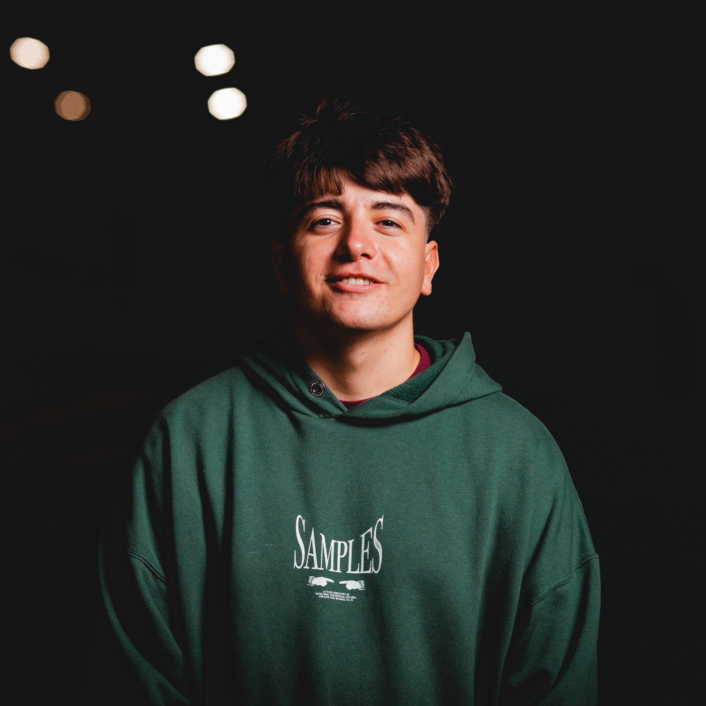

POLOS OPUESTOS
Sobre Nosotros
Somos Polos Opuestos, una banda de San Nicolás de los Arroyos, Buenos Aires. Nos unimos como cinco amigos apasionados por la música y lanzamos nuestra primer canción, "Un Rato", el 28 de agosto de 2023.
Nuestro último sencillo, "Yo x Vos", es una colaboración especial con el rapero local B.A.N. Después de lanzar cuatro sencillos, seguimos perfeccionando nuestro estilo musical. Cada canción es una oportunidad para explorar y crecer, buscando siempre sorprender y conectar con la gente que nos escucha.
INTEGRANTES POLOS
| Francisco Chiappari | Francisco Liberati | Thiago Rocha | Bautista Izquierdo | Ulises Nuñez |
| // Teclado, 21 años | // Voz, 21 años | // Bajo, 21 años | // Guitarra, 21 años | // Batería, 17 años |
|  |